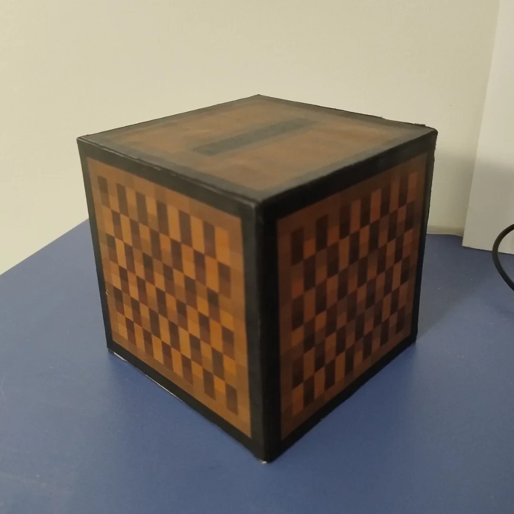
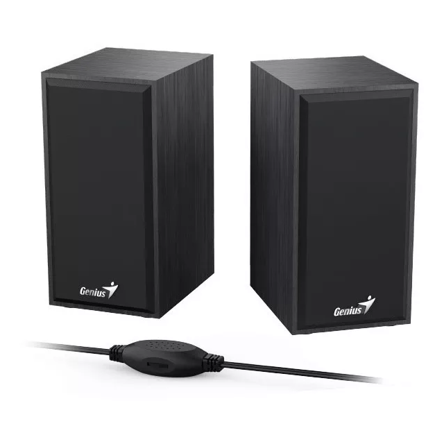
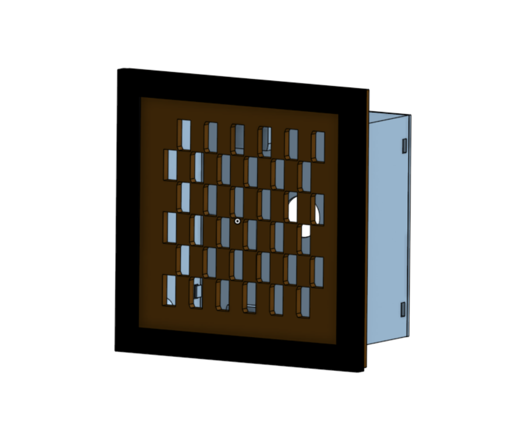

2026 · Audio · Diseño 3D · En curso
Un parlante empotrado con estética de Jukebox de Minecraft
Estoy armando un parlante que va empotrado en la pared de mi cuarto, con la estética del bloque Jukebox de Minecraft. Es un proyecto de diseño más que de electrónica: la idea es que quede integrado a la pared y que se vea como el bloque del juego.
La referencia
Me baso en una versión física del bloque: una caja cuadrada con una textura de píxeles en tonos marrones, un borde negro y una ranura en la cara superior. Esa textura de cuadrados desparejos es lo que quise reproducir en la parte frontal.

Los parlantes
Usé dos parlantes genéricos de computadora. Elegí un modelo cuyo gabinete encastra justo en el espacio que diseñé, así que no hizo falta modificarlos: se retiran y se vuelven a colocar sin tocar la pared.

El modelo 3D
Diseñé la pieza en Onshape y ya la imprimí. Tiene dos partes:
- El frente: un marco negro como el borde del bloque y, adentro, una trama de ranuras rectangulares desfasadas fila por fila. Imitan el patrón de cuadrados de la textura y, a la vez, son las aberturas por donde sale el sonido.
- La caja trasera: un recinto que entra en el hueco de la pared y aloja los parlantes.

Para completar: foto del frente impreso y pintado, cómo se instala en la pared, la alimentación y el amplificador, y el resultado final.